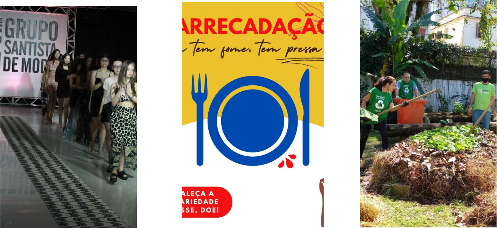

Shurty, que tem raízes venezuelanas e libanesas, viralizou nas redes sociais por preparar grandes quantidades de comida para entregar para os mais necessitados. Mas não é só isso. Além da generosidade, a tiktoker também aproveita para fazer uma crítica aos usuários que desperdiçam alimentos.
Veja os vídeos através do tiktok da influêncer clicando no botão abaixo:
FOME NA BAIXADA
De acordo com dados do Cadastro Único do Governo Federal, há 138,5 mil famílias (ou 415,5 mil pessoas) na região - que tem população de 1,8 milhão de pessoas - em situação de pobreza e extrema pobreza.
Em números absolutos, é quase o total de habitantes de Santos, que possui 16,7 mil famílias nessas condições. A cidade líder na região no triste quesito, porém, é São Vicente, com 26,7 mil. Já Mongaguá é a última colocada na Baixada (6,2 mil).
"Temos que sensibilizar a sociedade santista para quelise enfrente o flagelo da fome, por meio de compromissos que transformem nossa realidade", afirma a coordenadora da campanha na região.
"Ações são paliativas e estruturais, mas não suficientes. Precisamos formar a consciência das pessoas para a empatia, solidariedade, justiça e fraternidade. Não podemos permanecer insensíveis. Todos somos responsáveis", alerta.
Influêncer responde a tiktokers que desperdiçam comida
A conscientização sobre a fome em Santos

Realizando pesquisas sobre ações realizadas em nossa cidade para combater a insegurança alimentar, nós identificamos muitas delas realizadas em 2021 para trás. Como a assossiação "Quem tem fome, tem pressa", a "4° Moda pela Fome" que em parceria com o Fundo Social de Solidariedade (FSS) de Santos, foi realizado no Clube de Regatas Vasco da Gama (Ponta da Praia) e arrecadou centenas de itens para entidades assistenciais da Cidade. Além disso, santos em 2022 recebeu o prêmio estadual por estudo sobre segurança alimentar feito em feira livre, feitos pela Unifesp, Semam, Unip e Sesc
Conheça mais sobre as ações realizadas clicando nos botões abaixo:
A insegurança alimentar é uma realidade preocupante que afeta muitas comunidades ao redor do mundo, inclusive em Santos, SP - Brasil. A falta de acesso a alimentos adequados e nutritivos é um desafio que prejudica a saúde, o desenvolvimento e o bem-estar das pessoas. Esse A insegurança alimentar é uma realidade preocupante que afeta muitas comunidades ao redor do mundo, inclusive em Santos, SP - Brasil. A falta de acesso a alimentos adequados e nutritivos é um desafio que prejudica a saúde, o desenvolvimento e o bem-estar das pessoas. Esse é um desafio complexo, mas com esforços coletivos é possível fazer a diferença em Santos. Ao apoiar as causas relacionadas à insegurança alimentar, podemos contribuir para a melhoria da qualidade de vida das pessoas, promover a igualdade de oportunidades e fortalecer o tecido social da comunidade. Juntos, podemos trabalhar para garantir que todos tenham acesso a alimentos adequados, nutritivos e suficientes, construindo um futuro mais justo e sustentável.
Preencha o formulário abaixo e apoie a causa.
PRODUZIDO POR ALUNOS DO CURSO DE CIENCIAS DA COMPUTAÇÃO - UNISANTOS